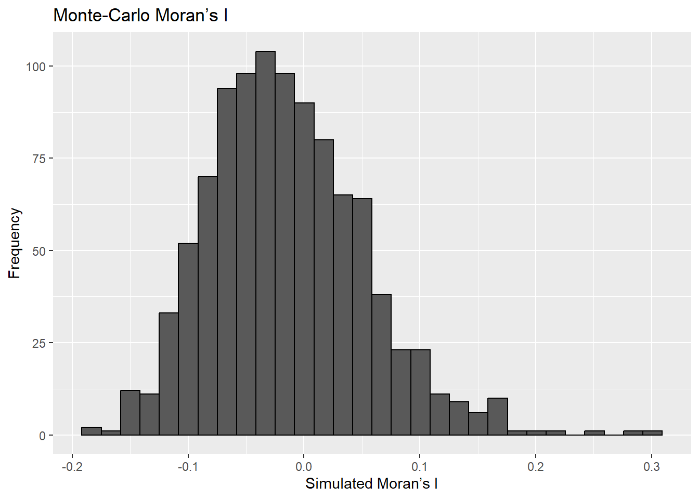
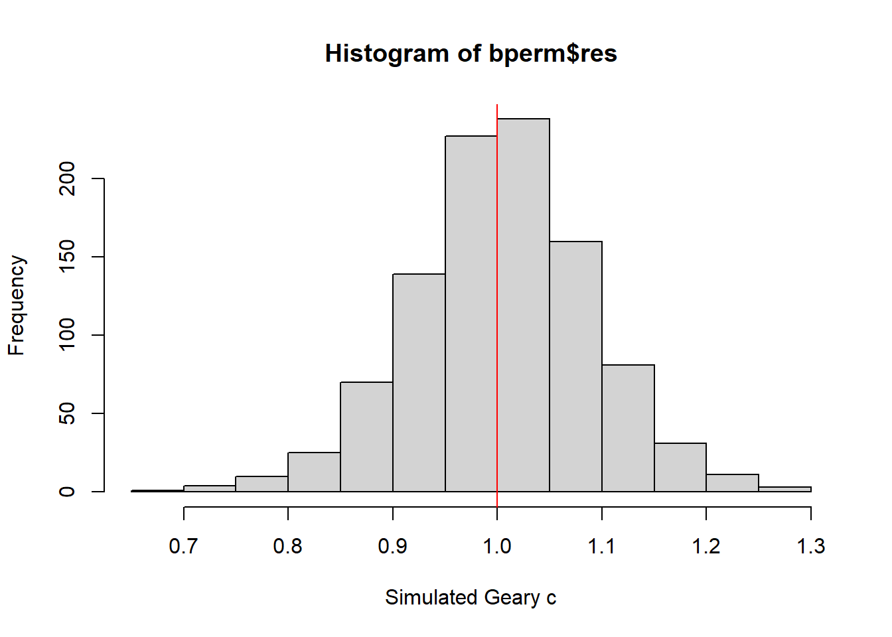

pacman::p_load(sf, spdep, tmap, tidyverse)Global Measures of Spatial Autocorrelation
Overview
In this section we will learn how to compute Global Measures of Spatial Autocorrelation (GMSA) by using spdep package. By the end to this hands-on exercise, you will be able to:
import geospatial data using appropriate function(s) of sf package
import csv file using appropriate function of readr package
perform relational join using appropriate join function of dplyr package
compute Global Spatial Autocorrelation (GSA) statistics by using appropriate functions of spdep package,
plot Moran scatterplot
compute and plot spatial correlogram using appropriate function of spdep package
provide statistically correct interpretation of GSA statistics.
The Study Area and Data
Two data sets will be used in this hands-on exercise, they are:
Hunan county boundary layer. This is a geospatial data set in ESRI shapefile format.
Hunan_2012.csv: This csv file contains selected Hunan’s local development indicators in 2012.
Installing and Loading the R packages
- sf Provides the core tools for handling spatial data
- tmap A package used for producing maps for visualisation
- tidyverse A collection of R packages designed for data science tasks such as data import, cleaning, transformation, and visualisation
- spdep Provides functions for spatial dependence and spatial regression analysis, including tools for creating spatial weights, testing for spatial autocorrelation, and fitting spatial econometric models
The code chunk below uses p_load() of pacman package to check if the packages are installed in the computer. If they are, then they will be launched into R.
Importing and Preparing Study Area
The following code chunk will be using the st_read() function of sf package to import the Hunan shapefile into our R object, hunan.
hunan <- st_read(dsn = "data/geospatial",
layer = "Hunan")Reading layer `Hunan' from data source
`C:\Users\zongy\OneDrive\Desktop\SMU\ISSS626 - Geospatial Analytics\zongyin-tan\ISSS626-Geospatial-zytan\Hands-on_Ex\Hands-on_Ex05a\data\geospatial'
using driver `ESRI Shapefile'
Simple feature collection with 88 features and 7 fields
Geometry type: POLYGON
Dimension: XY
Bounding box: xmin: 108.7831 ymin: 24.6342 xmax: 114.2544 ymax: 30.12812
Geodetic CRS: WGS 84hunan2012 <- read_csv("data/aspatial/Hunan_2012.csv")Rows: 88 Columns: 29
── Column specification ────────────────────────────────────────────────────────
Delimiter: ","
chr (2): County, City
dbl (27): avg_wage, deposite, FAI, Gov_Rev, Gov_Exp, GDP, GDPPC, GIO, Loan, ...
ℹ Use `spec()` to retrieve the full column specification for this data.
ℹ Specify the column types or set `show_col_types = FALSE` to quiet this message.Performing relational join
After the importing of the files into the R environment, we will proceed to join the files.
The code chunk below will be used to update the attribute table of hunan’s SpatialPolygonsDataFrame with the attribute fields of hunan2012 dataframe. This is performed by using left_join() of dplyr package.
hunan <- left_join(hunan,hunan2012) %>%
select(1:4, 7, 15)Joining with `by = join_by(County)`Visualising Regional Development Indicator
We will prepare a basemap and a choropleth map showing the distribution of GDPPC 2012 by using qtm() of tmap package.
equal <- tm_shape(hunan) +
tm_polygons(fill = "GDPPC",
fill.scale = tm_scale_intervals(
style = "equal",
n = 5,
values = "brewer.blues")) +
tm_borders(fiil_alpha = 0.5) +
tm_layout(legend.position = c("left", "bottom"),
main.title = "Equal interval classification")[tm_borders()] Argument `fiil_alpha` unknown.
[v3->v4] `tm_layout()`: use `tm_title()` instead of `tm_layout(main.title = )`quantile <- tm_shape(hunan) +
tm_polygons(fill = "GDPPC",
fill.scale = tm_scale_intervals(
style = "quantile",
n = 5)) +
tm_borders(fiil_alpha = 0.5) +
tm_layout(legend.position = c("left", "bottom"),
main.title = "Quantile classification")[tm_borders()] Argument `fiil_alpha` unknown.
[v3->v4] `tm_layout()`: use `tm_title()` instead of `tm_layout(main.title = )`tmap_arrange(equal,
quantile,
asp=1,
ncol=2)
Global Measures of Spatial Autocorrelation
In this section, you will learn how to compute global spatial autocorrelation statistics and to perform spatial complete randomness test for global spatial autocorrelation.
Global spatial autocorrelation statistics are used to check whether values of a variable which in our case is GDP per capita are clustered, dispersed, or randomly distributed across space.
Simply said, we want to know whether the data has a spatial pattern, and the randomness test tells us whether that pattern is statistically significant (meaningful or by coincidence).
Computing Contiguity Spatial Weights
Before we can compute the global spatial autocorrelation statistics, we need to construct a spatial weights of the study area. The spatial weights is used to define the neighbourhood relationships between the geographical units (county) in the study area.
poly2nb() from the spdep package builds a neighbour list from a polygon layer by checking which regions are contiguous. In this case, we use the Queen contiguity method, which considers polygons as neighbours if they share either a boundary or a corner. Queen contiguity is chosen because it captures more neighbour relationships than Rook contiguity, making it useful when we want to account for broader spatial interactions. The output is an nb object that lists for each polygon, the indices of its neighbouring polygons.
We also applied poly2nb() in Hands-on Exercise 4 to construct contiguity-based weights before computing spatial lags and visualising spatial patterns, and here it is used again in Hands-on Exercise 5a to test for global spatial autocorrelation.
wm_q <- poly2nb(hunan,
queen=TRUE)
summary(wm_q)Neighbour list object:
Number of regions: 88
Number of nonzero links: 448
Percentage nonzero weights: 5.785124
Average number of links: 5.090909
Link number distribution:
1 2 3 4 5 6 7 8 9 11
2 2 12 16 24 14 11 4 2 1
2 least connected regions:
30 65 with 1 link
1 most connected region:
85 with 11 linksRow-standardised weights matrix
Next, we need to assign weights to each neighboring polygon. In our case, each neighboring polygon will be assigned equal weight (style=“W”). This is accomplished by assigning the fraction 1/(#ofneighbors) to each neighboring county then summing the weighted income values.
While this is the most intuitive way to summaries the neighbors’ values it has one drawback in that polygons along the edges of the study area will base their lagged values on fewer polygons thus potentially over- or under-estimating the true nature of the spatial autocorrelation in the data. For this example, we’ll stick with the style=“W” option for simplicity’s sake but note that other more robust options are available, notably style=“B”.
rswm_q <- nb2listw(wm_q,
style="W",
zero.policy = TRUE)
rswm_qCharacteristics of weights list object:
Neighbour list object:
Number of regions: 88
Number of nonzero links: 448
Percentage nonzero weights: 5.785124
Average number of links: 5.090909
Weights style: W
Weights constants summary:
n nn S0 S1 S2
W 88 7744 88 37.86334 365.9147
Note
The input of nb2listw() must be an object of class nb. The syntax of the function has two major arguments, namely style and zero.poly.
style can take values “W”, “B”, “C”, “U”, “minmax” and “S”. B is the basic binary coding, W is row standardised (sums over all links to n), C is globally standardised (sums over all links to n), U is equal to C divided by the number of neighbours (sums over all links to unity), while S is the variance-stabilizing coding scheme proposed by Tiefelsdorf et al. 1999, p. 167-168 (sums over all links to n).
If zero policy is set to TRUE, weights vectors of zero length are inserted for regions without neighbour in the neighbours list. These will in turn generate lag values of zero, equivalent to the sum of products of the zero row t(rep(0, length=length(neighbours))) %*% x, for arbitrary numerical vector x of length length(neighbours). The spatially lagged value of x for the zero-neighbour region will then be zero, which may (or may not) be a sensible choice.
Global Measures of Spatial Autocorrelation: Moran’s I
In this section, you will learn how to perform Moran’s I statistics testing by using moran.test() of spdep.
Moran’s test is the method which we use to measure global spatial autocorrelation.
The test produces Moran’s I statistic, which works like a correlation coefficient but for spatial data:
A positive Moran’s I (close to +1) means that regions with similar values (high with high, low with low) are spatially clustered together.
A negative Moran’s I (close to -1) means that neighbouring regions tend to have opposite values (high next to low), showing a checkerboard-like pattern.
A value near 0 suggests spatial randomness means no clear clustering or dispersion.
Maron’s I test
The code chunk below performs Moran’s I statistical testing using moran.test() of spdep.
moran.test(hunan$GDPPC,
listw=rswm_q,
zero.policy = TRUE,
na.action=na.omit)
Moran I test under randomisation
data: hunan$GDPPC
weights: rswm_q
Moran I statistic standard deviate = 4.7351, p-value = 1.095e-06
alternative hypothesis: greater
sample estimates:
Moran I statistic Expectation Variance
0.300749970 -0.011494253 0.004348351 From the output of Moran’s I test, we can conclude the following:
The Moran’s I statistic is 0.3007, which is a positive value. This indicates that there is positive spatial autocorrelation in GDP per capita. This means that regions with high GDPPC tend to be located near other regions with high GDPPC, and regions with low GDPPC tend to be near other low GDPPC regions.
The expected value under randomness is -0.0115, which is close to zero. Since the observed value of 0.3007 is larger than the expectation, it strongly suggests clustering rather than randomness.
The p-value is 1.095e-06, which is extremely small which is below 0.05 (typical threshold). This means the result is statistically significant, and we can reject the null hypothesis of spatial randomness.
In conclusion, GDP per capita in Hunan is not randomly distributed but instead shows significant clustering. Wealthier areas are spatially grouped together and poorer areas are also grouped together.
Computing Monte Carlo Moran’s I
Instead of just relying on the conclusion of Moran’s Test above, we can strengthen the conclusion we have by using a permutation based approach called Monte Carlo Moran’s I. Instead of relying only on the theoretical distribution of Moran’s I, the test randomly shuffles the data multiple times. For each shuffle, it recalculates Moran’s I to build a reference distribution that represents what Moran’s I would look like if the data were spatially random. We then can use the simulated distribution results to compare with the original test.
If the observed Moran’s I is much higher or lower than most of the simulated values, it shows that the spatial pattern is very unlikely to have occurred by chance.
The code chunk below performs permutation test for Moran’s I statistic by using moran.mc() of spdep. A total of 1000 simulation will be performed. We set the seed for reproduceability.
set.seed(1234)
bperm= moran.mc(hunan$GDPPC,
listw=rswm_q,
nsim=999,
zero.policy = TRUE,
na.action=na.omit)
bperm
Monte-Carlo simulation of Moran I
data: hunan$GDPPC
weights: rswm_q
number of simulations + 1: 1000
statistic = 0.30075, observed rank = 1000, p-value = 0.001
alternative hypothesis: greaterFrom the Monte-Carlo Moran’s I output we can conclude the following:
The observed statistic is 0.30075 and its observed rank is 1000 out of 1000 values. That means none of the 999 permuted datasets produced a Moran’s I as large as the observed value.
The permutation p-value = 0.001 confirms there is about a 0.1% chance of getting so strong a positive spatial association if GDPPC were spatially random.
This shows clear positive spatial autocorrelation.
Visualising Monte Carlo Moran’s I
It is always a good practice for us the examine the simulated Moran’s I test statistics in greater detail. This can be achieved by plotting the distribution of the statistical values as a histogram by using the code chunk below.
In the code chunk below hist() and abline() of R Graphics are used.
mean(bperm$res[1:999])[1] -0.01504572var(bperm$res[1:999])[1] 0.004371574summary(bperm$res[1:999]) Min. 1st Qu. Median Mean 3rd Qu. Max.
-0.18339 -0.06168 -0.02125 -0.01505 0.02611 0.27593 hist(bperm$res,
freq=TRUE,
breaks=20,
xlab="Simulated Moran's I")
abline(v=0,
col="red") 
df_perm <- tibble(sim_I = as.numeric(bperm$res))
I_obs <- as.numeric(bperm$statistic)
ggplot(df_perm, aes(x = sim_I)) +
geom_histogram(bins = 30, color = "black")+
labs(title = "Monte-Carlo Moran’s I",
x = "Simulated Moran’s I",
y = "Frequency")
The histogram shows the distribution of simulated Moran’s I values from the Monte Carlo test, which represents what the statistic would look like if the data were spatially random.
The observed Moran’s I lies far to the right of the bulk of the simulated values, indicating that the actual spatial clustering is much stronger than what would be expected by chance. This reinforces the conclusion that the spatial pattern in GDP per capita is significant and unlikely to have occurred randomly.
Global Measures of Spatial Autocorrelation: Geary’s C
In this section, you will learn how to perform Geary’s C statistics testing by using appropriate functions of spdep package.
Geary’s C is a global measure of spatial autocorrelation, similar to Moran’s I, but it focuses more on detecting local differences rather than overall clustering. While Moran’s I looks at the correlation between values across all neighboring regions, Geary’s C compares each region’s value directly with its neighbors to see how different or similar they are.
The value of Geary’s C typically ranges between 0 and 2. Values close to 0 indicate strong positive spatial autocorrelation meaning neighbors are very similar, values around 1 suggest randomness and values closer to 2 show strong negative spatial autocorrelation meaning neighbors are very different.
Geary’s C test
The code chunk below performs Geary’s C test for spatial autocorrelation by using geary.test() of spdep.
geary.test(hunan$GDPPC, listw=rswm_q)
Geary C test under randomisation
data: hunan$GDPPC
weights: rswm_q
Geary C statistic standard deviate = 3.6108, p-value = 0.0001526
alternative hypothesis: Expectation greater than statistic
sample estimates:
Geary C statistic Expectation Variance
0.6907223 1.0000000 0.0073364 From the output of Geary’s C test, we can conclude the following:
The Geary’s C statistic is 0.6907, whichis lower than the expected value of 1 under spatial randomness. This indicates that neighboring regions tend to have more similar GDPPC values than would occur by chance.
p-value = 0.0001526 confirms that this similarity is statistically significant, meaning we can reject the null hypothesis of spatial randomness.
In conclusion, GDPPC is not randomly distributed across space, but instead shows clear clustering of similar values, where regions with high or low GDPPC are located near others with similar levels.
Computing Monte Carlo Geary’s C
Like what we did with Moran’s Test, instead of just relying on the conclusion of Geary’s C Test, we can strengthen the conclusion we have by using a permutation based approach.
The code chunk below performs permutation test for Geary’s C statistic by using geary.mc() of spdep. Again, we set the seed to ensure reproduceability.
set.seed(1234)
bperm=geary.mc(hunan$GDPPC,
listw=rswm_q,
nsim=999)
bperm
Monte-Carlo simulation of Geary C
data: hunan$GDPPC
weights: rswm_q
number of simulations + 1: 1000
statistic = 0.69072, observed rank = 1, p-value = 0.001
alternative hypothesis: greaterFrom the Monte-Carlo Geary’s C output we can conclude the following:
The observed statistic is 0.69072 and its observed rank is 1 out of 1000 values. This indicates that the observed Geary’s C is much lower than what would typically be expected under spatial randomness, showing stronger local similarity than random distribution.
The permutation p-value = 0.001 means there is about a 0.1% chance of observing a Geary’s C this low if GDPPC were spatially random.
This confirms the presence of significant positive spatial autocorrelation, where neighboring regions tend to have more similar GDPPC values than would occur by chance.
Visualising the Monte Carlo Geary’s C
Next, we will plot a histogram to reveal the distribution of the simulated values by using the code chunk below.
mean(bperm$res[1:999])[1] 1.004402var(bperm$res[1:999])[1] 0.007436493summary(bperm$res[1:999]) Min. 1st Qu. Median Mean 3rd Qu. Max.
0.7142 0.9502 1.0052 1.0044 1.0595 1.2722 hist(bperm$res, freq=TRUE, breaks=20, xlab="Simulated Geary c")
abline(v=1, col="red") 
The histogram shows the distribution of simulated Geary’s C values from the Monte Carlo test, which represents what the statistic would look like if the data were spatially random. The observed Geary’s C lies far to the left of the bulk of the simulated values, indicating that the actual spatial autocorrelation is much stronger than what would be expected by chance. This supports the conclusion that the similarities among neighboring regions in GDP per capita are statistically significant, and the observed spatial dependence is unlikely to have occurred randomly.
Spatial Correlogram
A spatial correlogram is a graph that shows how similar or different nearby places are as the distance between them increases. It plots a measure of spatial autocorrelation (like Moran’s I or Geary’s C) against distance. In simple terms, it helps us see whether areas that are close to each other have similar values and how this similarity changes as we look at areas that are farther apart.
Compute Moran’s I correlogram
In the code chunk below, sp.correlogram() of spdep package is used to compute a 6-lag spatial correlogram of GDPPC. The global spatial autocorrelation used in Moran’s I. The plot() of base Graph is then used to plot the output.
MI_corr <- sp.correlogram(wm_q,
hunan$GDPPC,
order=6,
method="I",
style="W")
plot(MI_corr)
By plotting the output might not allow us to provide complete interpretation. This is because not all autocorrelation values are statistically significant. Hence, it is important for us to examine the full analysis report by printing out the analysis results as in the code chunk below.
print(MI_corr)Spatial correlogram for hunan$GDPPC
method: Moran's I
estimate expectation variance standard deviate Pr(I) two sided
1 (88) 0.3007500 -0.0114943 0.0043484 4.7351 2.189e-06 ***
2 (88) 0.2060084 -0.0114943 0.0020962 4.7505 2.029e-06 ***
3 (88) 0.0668273 -0.0114943 0.0014602 2.0496 0.040400 *
4 (88) 0.0299470 -0.0114943 0.0011717 1.2107 0.226015
5 (88) -0.1530471 -0.0114943 0.0012440 -4.0134 5.984e-05 ***
6 (88) -0.1187070 -0.0114943 0.0016791 -2.6164 0.008886 **
---
Signif. codes: 0 '***' 0.001 '**' 0.01 '*' 0.05 '.' 0.1 ' ' 1A lag means “how far out” you’re looking in terms of neighbors. We can reference to the following:
Lag 1 = Immediate neighbors (directly touching counties)
Lag 2 = Neighbors of neighbors
Lag 3 = Further away and so on.
Lag 1 to lag 3 is positive. This means nearby counties tend to have similar GDPP.
Lag 4 looks like a transition zone as it overlaps 0 by a small amount. This is where the short-range clustering fades out.
Lag 5 to lag 6 becomes negative and significant, indicating spatial dissimilarity.
In conclusion, GDPP shows a clear positive spatial autocorrelation up to about 2–3 neighbor steps, then it dissipates around lag 4 and flips to negative autocorrelation at broader separations.
We can reference to the table below for easier understanding
| Lag No. | Moran’s I Estimate | p value | Remarks |
|---|---|---|---|
| 1 | 0.3 | <0.001 | Strong clustering among direct neighbors |
| 2 | 0.2 | <0.001 | Still clustering, but weaker than lag 1 |
| 3 | 0.07 | 0.04 | Very weak clustering, but still significant |
| 4 | 0.03 | 0.23 | Overlapping 0 |
| 5 | -0.15 | <0.001 | Strong negative autocorrelation |
| 6 | -0.12 | <0.01 | Strong negative autocorrelation |
Compute Geary’s C correlogram and plot
In the code chunk below, sp.correlogram() of spdep package is used to compute a 6-lag spatial correlogram of GDPPC. The global spatial autocorrelation used in Geary’s C. The plot() of base Graph is then used to plot the output.
GC_corr <- sp.correlogram(wm_q,
hunan$GDPPC,
order=6,
method="C",
style="W")
plot(GC_corr)
Similar to the previous step, we will print out the analysis report by using the code chunk below.
print(GC_corr)Spatial correlogram for hunan$GDPPC
method: Geary's C
estimate expectation variance standard deviate Pr(I) two sided
1 (88) 0.6907223 1.0000000 0.0073364 -3.6108 0.0003052 ***
2 (88) 0.7630197 1.0000000 0.0049126 -3.3811 0.0007220 ***
3 (88) 0.9397299 1.0000000 0.0049005 -0.8610 0.3892612
4 (88) 1.0098462 1.0000000 0.0039631 0.1564 0.8757128
5 (88) 1.2008204 1.0000000 0.0035568 3.3673 0.0007592 ***
6 (88) 1.0773386 1.0000000 0.0058042 1.0151 0.3100407
---
Signif. codes: 0 '***' 0.001 '**' 0.01 '*' 0.05 '.' 0.1 ' ' 1